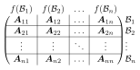
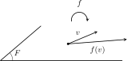
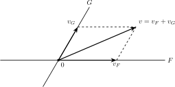
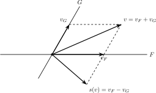
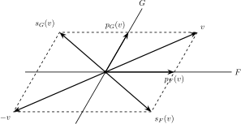

3 Compléments d’algèbre linéaire
Dans tout ce chapitre, \(E\) désigne un \(\mathbb{K}\)-espace vectoriel avec \(\mathbb{K}=\mathbb{R}\) ou \(\mathbb{C}\), et \(I\) désigne un ensemble quelconque d’indices.
Introduction
Un espace vectoriel est essentiellement un ensemble dans lequel on est capable d’additionner les éléments et de les mutltiplier par un scalaire, avec les mêmes règles de distributivité et de commutativité que la multiplication et l’addition usuelles.
La notion centrale de l’algèbre linéaire est donc celle de combinaison linéaire. C’est elle qui permet de définir les familles libres, les familles génératrices, les sous-espaces vectoriels, et les applications linéaires.
La notion de combinaison linéaire a été vue en première année dans le cas des familles finies de \(E\) ; on l’étend cette année au cas des familles quelconques.
3.1 Familles quelconques de vecteurs
Cette première section étend au cas des familles quelconques (finies ou infinies) les définitions vues en première année.
3.1.1 Combinaisons linéaires
Contrairement aux sommes infinies de l’analyse, les sommes rencontrées en algèbre linéaire seront finies (on ne dispose pas, à priori, de notion de convergence dans un espace vectoriel).
Pour pouvoir envisager une combinaison linéaire d’un nombre infini de vecteurs, on est amené à introduire la notion de famille à support fini.
Définition 3.1 Le support d’une famille \((\lambda_{i})_{i \in I}\) de \(\mathbb{K}\) est l’ensemble des \(i \in I\) pour lesquels \(\lambda_{i}\) est non nul. On dit que la famille \((\lambda_{i})_{i \in I}\) est à support fini si son support est un sous-ensemble fini de \(I\).
Définition 3.2 Soit \(E\) un \(\mathbb{K}\)-espace vectoriel et \(\mathcal{F}=(v_{i})_{i \in I}\) une famille d’éléments de \(E\). Une combinaison linéaire de \(\mathcal{F}\) est une somme de la forme \(\sum_{i \in I}\lambda_{i}v_{i}\) où \((\lambda_{i})_{i \in I}\) est une famille à support fini d’éléments de \(\mathbb{K}\), appelés coefficients de la combinaison linéaire.
Dans cas d’un ensemble fini \(I\), les familles à support fini coincident avec les familles, et on retrouve la définition vue en première année.
Exemple 3.1 Une combinaison linéaire d’une famille \(v_1,\dots,v_{n}\) de \(E\) est une somme de la forme \(\sum_{i=1}^{n}\lambda_{i} v_{i}\) avec \(\lambda_1,\dots,\lambda_{n}\in \mathbb{K}\).
Lorsque \(I\) est infini, par exemple si \(I=\mathbb{N}\), on se limite par contre à un nombre fini de vecteurs :
Exemple 3.2 Dans \(E=\mathbb{K}[X]\), une combinaison linéaire de \(\{ X^{k}, k\in \mathbb{N}\}\) est un polynôme à coefficients dans \(\mathbb{K}\).
3.1.2 Familles libres, génératrices
Définition 3.3 Une famille \(\mathcal{F}=(v_{i})_{i \in I}\) de \(E\) est libre si la seule combinaison linéaire nulle de \(\mathcal{F}\) est la combinaison linéaire triviale i.e. pour toute famille \((\lambda_{i})_{i \in I}\) de \(\mathbb{K}\) à support fini,
\[ \sum_{i \in I} \lambda_i v_{i} = 0_{E} \mathbb{R}ightarrow \forall i \in I,\ \lambda_{i}=0. \]
Exemple 3.3 La famille \(\{X^{k},\ k \in \mathbb{N}\}\) est une famille libre de \(\mathbb{K}[X]\) car elle est échelonnée en degrée (les polynômes qui composent cette famille ont des degrés deux à deux distincts).
Proposition 3.1 Toute sous-famille d’une famille libre est libre.
Définition 3.4 On dit qu’une famille \(\mathcal{G}\) de \(E\) est génératrice ou qu’elle engendre \(E\) si tout élément de \(E\) est combinaison linéaire de \(\mathcal{G}\).
Exemple 3.4 La famille \(\{X^k,\ k\in \mathbb{N}\}\) est une famille génératrice de \(E=\mathbb{K}[X]\).
3.1.3 Bases
Définition 3.5 Une famille \(\mathcal{B}\) de \(E\) est une base de \(E\) si elle est à la fois libre est génératrice.
Exemple 3.5 La famille \(\{X^k,\ k\in \mathbb{N}\}\) est une base de \(\mathbb{K}[X]\).
On rappelle qu’un espace vectoriel \(E\) est dit de dimension finie s’il admet une famille génératrice finie. Dans ce cas toutes les bases de \(E\) possède le même nombre d’éléments, appelé dimension de \(E\), et noté \(\dim E\).
Proposition 3.2 (Caractérisation des bases en dimension finie) Soit \(E\) un \(\mathbb{K}\)-espace vectoriel de dimension finie et \(\mathcal{F}\) une famille de \(E\). Alors
toute famille libre de \(E\) a au plus \(\dim E\) éléments et une famille libre à \(\dim E\) éléments est automatiquement une base,
toute famille génératrice de \(E\) à au moins \(\dim E\) éléments, et une famille génératrice à \(\dim E\) élément est automatiquement une base de \(E\).
Proposition 3.3 (Bases canoniques) Les bases suivantes, dites canoniques, sont à connaître :
la base canonique de \(\mathcal{M}_n(\mathbb{K})\) est \(\{E_{ij},\ i\,j\in\{1,\dots,j\}\}\) où \(E_{ij}\) est la matrice contenant uniquement des \(0\), sauf un \(1\) en position \(ij\),
la base canonique de \(\mathbb{K}_n[X]\) est \((1,X,\dots,X^n)\),
la base canonique de \(\mathbb{K}[X]\) est \(\{X^k,\ k\in\mathbb{N}\}\).
Remarque 3.1. Le premier cas engloble les cas \(\mathcal{M}_{1,n}(\mathbb{K})=\mathbb{K}^{n}\) (matrices lignes) et \(\mathcal{M}_{n,1}(\mathbb{K})\) (matrices colonnes), souvent identifiés à tort.
3.2 Sous-espaces vectoriels
Pour nous, les sous espaces vectoriels seront surtout un outil pour comprendre et définir des applications linéaires, via les notions de somme directe.
On commence par quelques rappels de première année.
3.2.1 Sous espaces vectoriels
Proposition 3.4 (Caractérisation des sous espaces vectoriels) Un sous-ensemble \(F\) de \(E\) est un sous espace vectoriel de \(E\) si \(F\) est non vide et si \(F\) est stable par combinaisons linéaires, c-à-d
\[ \forall u,v \in F,\ \forall \lambda \in \mathbb{K}, u+\lambda v \in F. \]
Remarque 3.2. On montre toujours que \(F\) est non vide en montrant que \(0_{E}\in F\).
Définition 3.6 (Sous espace engendré par une partie) Soit \(\mathcal{G}\) une partie non vide de \(E\). On note \(\mathrm{Vect}(\mathcal{G})\) l’ensemble des combinaisons linéaires de \(\mathcal{G}\). Alors \(\mathrm{Vect}(\mathcal{G})\) est un sous espace vectoriel de \(E\), dit engendré par \(\mathcal{G}\), et \(\mathcal{G}\) est une famille génératrice de \(\mathrm{Vect}(\mathcal{G})\).
En pratique, on ne prend jamais la peine de rappeler que \(\mathcal{G}\) est une famille génératrice de \(\mathrm{Vect}(\mathcal{G})\) ; c’est implicite dans cette notation. En particulier, si la famille \(\mathcal{G}\) est libre, c’est automatiquement une base de \(F\).
Exemple 3.6 La famille \(\{1,X,\dots X^{n}\}\) est une famille génératrice de \(\mathbb{R}_{n}[X]\).
Exemple 3.7 On a
\[ F=\left\{ \begin{pmatrix} a&b\\b&a \end{pmatrix},\ a,b \in \mathbb{R}\right\} = \mathrm{Vect}(I_2,J), \] avec \(J = \begin{pmatrix} 0&1\\1&0 \end{pmatrix}\). Donc \(F\) est un sous-espace vectoriel de \(\mathcal{M}_{2}(\mathbb{R})\).
3.2.2 Somme de sous espaces vectoriels
Les sous espaces vectoriels sont stables par intersection mais par par réunion (considérer par exemple la réunion de deux droites dans le plan, qui n’est clairement pas stable par somme). En algèbre linéaire, la réunion est remplacée par la notion de somme.
Définition 3.7 Soient \(F_{1},\dots,F_{n}\) des sous espaces vectoriel de \(E\). On appelle somme des sous espaces \(F_1,\dots,F_{n}\) le sous ensemble
\[ F = \{v_1 + \cdots + v_{n}, v_{i} \in F_{i},\ i=1,\dots,n\}. \]
On la note \(F_{1}+ \dots + F_{n}\) ou \(\displaystyle \sum_{i=1}^{n}F_{i}\). Les sous espaces vectoriels \(F_{1},\dots,F_{n}\) s’appellent les facteurs de la somme.
Proposition 3.5 La somme \(F_{1}+\dots +F_{n}\) est un sous espace vectoriel de \(E\).
Remarque 3.3. La somme \(F_{1}+ \dots + F_{n}\) est le plus petit sous espace vectoriel de \(E\) (au sens de l’inclusion) contenant \(F_{1},\dots,F_{n}\).
Par définition, tout élément de \(F_{1}+ \dots + F_{n}\) s’écrit comme somme d’élément de \(F_{1},\dots,F_{n}\). Lorsque cette écriture est unique, on dit que la somme est directe.
Définition 3.8 On dit que la somme \(F = F_{1}+ \dots + F_{n}\) est directe si tout élément de \(F\) s’écrit de manière unique comme somme d’éléments de \(F_{1},\dots,F_{n}\). On note alors \(F = F_{1}\oplus \cdots \oplus F_{n}\).
Les sommes directes jouent le même rôle que les familles libres. En particulier :
Proposition 3.6 (Unicité de l’écriture de zéro) La somme \(F = F_{1}+ \dots + F_{n}\) est directe ssi l’écriture de \(0_{E}\) dans la somme \(F\) est unique i.e.
\[ \forall v_{1} \in F_{1},\dots, v_{n} \in F_{n},\ v_{1}+\dots + v_{n} = 0_{E} \mathbb{R}ightarrow v_{1}= \dots = v_{n}=0_{E}. \]
Le cas particulier de deux facteurs est très fréquent (projecteur, symétrie,…). Il est aussi plus simple à traiter.
Proposition 3.7 (Cas de deux facteurs) Soit \(F\) et \(G\) deux sous espaces vectoriels de \(E\). Alors la somme \(F + G\) est directe ssi \(F \cap G = \{0_E\}\).
Cette caractérisation est fausse pour trois facteurs ou plus (penser à \(3\) droites coplanaires).
Définition 3.9 Deux sous espaces vectoriels \(F\) et \(G\) de \(E\) sont suplémentaires dans \(E\) si \(E=F \oplus G\).
Proposition 3.8 (Caractérisation des supplémentaires) Soient \(F\) et \(G\) deux sous espaces vectoriels de \(E\). Les propositions suivantes sont équivalentes :
- \(E=F \oplus G\),
- \(F \cap G =0_{E}\) et \(E=F + G\),
- si \(E\) est de dimension finie, \(F \cap G = \{0_{E}\}\) et \(\dim E = \dim F + \dim G\).
3.2.3 Définir une application linéaire à l’aide d’une somme directe
On sait qu’une application linéaire est entièrement définie par l’image d’une base, résumée par une matrice en dimension finie.
De même, nous allons voir qu’une application linéaire est entièrement déterminée par ses restrictions aux facteurs d’une somme directe, résumées par une matrice par blocs.
Définition 3.10 Soit \(F\) un sous espace vectoriel de \(E\) et \(f\) une application linéaire de \(E\) dans \(E'\). La restriction de \(f\) à \(F\) est l’application linéaire \(f_{|F}:F \to E'\) définie par
\[ \forall v \in F,\ f_{|F}(v) = f(v). \]
Autrement dit, l’action de \(f_{|F}\) est la même que \(f\), mais l’espace de départ change. Or, changer l’espace de départ (ou d’arrivée) d’une fonction, c’est changer la fonction. Par exemple, réduire l’espace de départ (on dit restreindre) peut rendre une fonction injective. De même, reduire l’espace d’arrivée (on dit corestreindre) peut rendre une fonction surjective. Dès lors, il est légitime de distinguer \(f\) et \(f_{|F}\).
Proposition 3.9 (Définition d’une application linéaire sur une somme directe) Soient \(E\) et \(E'\) deux \(\mathbb{K}\)-espaces vectoriels. On suppose que \(E=\bigoplus_{i=1}^{n}F_{i}\). On se donne, pour tout \(i \in \{1,\dots,n\}\), une application linéaire \(f_i:F_i \to E'\). Alors il existe une unique application linéaire \(f\) de \(E\) dans \(E'\) tel que \(f_{|F_{i}}=f_i\).
Il faut comprendre cette proposition de deux manières :
c’est un résultat d’unicité ; si deux applications linéaires \(f\) et \(g\) coincident sur chaque facteur d’une somme directe (c.-à.d si \(f_{|F_{i}}=g_{|F_{i}}\) pour tout \(i\)), alors \(f=g\),
c’est un un résultat d’existence : pour définir une application linéaire de \(E\) dans \(E'\), il suffit de la définir sur chaque facteur de la somme directe (ce qui est en général plus simple que de la définir partout).
Définition 3.11 (Base adaptée) Si \(E=\bigoplus_{i=1}^{n} F_{i}\) et si \(\mathcal{B}_i\) est une base de \(F_{i}\) pour \(i=1,\dots,n\), alors la famille \(\mathcal{B}=(\mathcal{B}_{1},\dots,\mathcal{B}_{n})\) obtenue en mettant bout à bout les bases \(B_{1},\dots,\mathcal{B}_{n}\) est une base de \(E\), dite adaptée à la somme directe \(E=\bigoplus_{i=1}^{n}F_{i}\).
La notion de base adaptée mêne à l’écriture des matrices d’applications linéaires par blocs, ce que nous expliquons maintenant.
Définition 3.12 (Matrices par blocs) Une matrice est dite écrite par blocs si elle est divisée en sous matrices (les blocs) figurés à l’aide de lignes horizontales et/ou verticales.
Exemple 3.8 La matrice
\[ A = \begin{pmatrix} 1&2&2\\ 3 &5&5\\ 4 &5&5 \end{pmatrix} \]
peut s’écrire par blocs
\[ A = \left(\begin{array}{c|cc} 1&2&2\\ \hline 3 &5&5\\ 4 &5&5 \end{array}\right) \]
On écrit alors
\[ A = \begin{pmatrix} \boldsymbol{A}_{11} & \boldsymbol{A}_{12}\\ \boldsymbol{A}_{21} & \boldsymbol{A}_{22} \end{pmatrix} \]
avec \(\boldsymbol{A}_{11} = (1)\), \(\boldsymbol{A}_{12} = \begin{pmatrix} 2&2 \end{pmatrix}\), \(\boldsymbol{A}_{21} = \begin{pmatrix} 3\\4 \end{pmatrix}\) et \(\boldsymbol{A}_{22} = 5 I_{2}\).
Proposition 3.10 (Multiplication des matrices par blocs) Si les tailles des blocs sont compatibles, on peut multiplier les matrices par blocs comme on multiplie les matrices scalaires.
Exemple 3.9 Si \(A = \begin{pmatrix} \boldsymbol{A}_{11} & \boldsymbol{A}_{12}\\ \boldsymbol{A}_{21} & \boldsymbol{A}_{22} \end{pmatrix}\) et \(B =\begin{pmatrix} \boldsymbol{B}_{11} & \boldsymbol{B}_{12}\\ \boldsymbol{B}_{21} & \boldsymbol{B}_{22} \end{pmatrix}\), et si la taille des blocs est compatible, alors
\[ AB = \begin{pmatrix} \boldsymbol{A}_{11}\boldsymbol{B}_{11} + \boldsymbol{A}_{12}\boldsymbol{B}_{21} & \boldsymbol{A}_{11}\boldsymbol{B}_{12}+ \boldsymbol{A}_{21}\boldsymbol{B}_{22}\\ \boldsymbol{A}_{21}\boldsymbol{B}_{11}+\boldsymbol{A}_{22}\boldsymbol{B}_{21} & \boldsymbol{A}_{21}\boldsymbol{B}_{12}+\boldsymbol{A}_{22}\boldsymbol{B}_{22} \end{pmatrix}. \]
Si \(E = \bigoplus_{i=1}^{n}F_{i}\) et si \(\mathcal{B}=(\mathcal{B}_{1},\dots,\mathcal{B}_{n})\) est une base adaptée à cette somme directe, la matrice d’un endomorphisme \(f\) de \(E\) s’écrit naturellement par blocs :
Proposition 3.11 Soit \(\mathcal{B} = (\mathcal{B}_{1},\dots,\mathcal{B}_{n})\) une base adaptée à la somme directe \(E = \bigoplus_{i=1}^{n} F_{i}\), alors la matrice de \(f \in \mathcal{L}(E)\) dans la base \(\mathcal{B}\) s’écrit par blocs

3.2.4 Sous espaces stables par un endomorphisme
Définition 3.13 (Sous espace stable par un endomorphisme) Soit \(f \in \mathcal{L}(E)\) et \(F\) un sous espace vectoriel de \(E\). On dit que \(F\) est stable par \(f\) si
\[ \forall v \in F, f(v) \in F. \]

Exemple 3.10 Le sous espace \(\mathbb{R}_{n}[X]\) est stable par dérivation.
Exemple 3.11 L’axe d’une rotation \(r\) de \(\mathbb{R}^{3}\) est stable par \(r\).
Exemple 3.12 Le plan d’une réflexion \(s\) de \(\mathbb{R}^{3}\) est stable par \(s\).
Définition 3.14 (Endomorphisme induit par restriction) Si \(F\) est un sous espace vectoriel de \(E\) stable par un endomorphisme \(f\) de \(E\), alors la restriction de \(f\) à \(F\) définit un endomorphisme de \(F\). On l’appelle l’endomorphisme induit par restriction de \(f\) à \(F\).
Exemple 3.13 Puisque \(\mathbb{R}_{n}[X]\) est stable par dérivation, on peut restreindre la dérivation à \(\mathbb{R}_{n}[X]\). On obtient ainsi un endomorphisme de \(\mathbb{R}_{n}[X]\) définit par \(P \mapsto P'\).
Restreindre un endomorphisme peut présenter plusieurs avantages, notamment :
l’espace \(F\) peut être de dimension finie,
l’endomorphisme \(f_{|F}\) peut-être plus simple que l’endomorphisme \(f\).
Lorsque l’on cherche à montrer qu’un sous espace est stable par un endomorphisme, on peut avantageusement utiliser une famille génératrice (notamment, une base) de \(F\) :
Proposition 3.12 (Caractérisation de la stabilité à l’aide d’une famille génératrice) Soit \(F\) un sous espace vectoriel de \(E\) et \(f \in \mathcal{L}(E)\). Soit \(\mathcal{G}\) ne famille génératrice de \(F\). Alors \(F\) est stable par \(f\) ssi
\[ \forall v \in \mathcal{G}, f(v) \in F. \]
Visuellement, la stabilité d’un sous espace par un endomorphisme se traduit sur sa matrice dans une base adaptée par des blocs de \(0\). On l’illustre dans le cas d’une somme directe à deux facteurs.
Proposition 3.13 On suppose que \(E=F \oplus G\). Soit \(\mathcal{B}=(\mathcal{B}_{F},\mathcal{B}_{G})\) une base adaptée à cette somme directe et soit \(f \in \mathcal{L}(E)\). Alors \(F\) est stable par \(f\) ssi la matrice par blocs de \(f\) dans la base \(\mathcal{B}\) est de la forme
\[ \mathcal{M}_{\mathcal{B}}(f) = \begin{pmatrix} \boldsymbol{A}_{11}& \boldsymbol{A}_{12}\\ \boldsymbol{0}& \boldsymbol{A_{22}} \end{pmatrix}, \]
et dans ce cas, \(\boldsymbol{A}_{11} = \mathcal{M}_{\mathcal{B}_{F}}(f_{|F})\).
Remarque 3.4. On a un résultat analogue pour la stabilité de \(G\) par \(f\).
3.3 Projecteurs et symétries
On applique les résultats de la section précédente à la définition des projecteurs et des symétries. Ce sont des endomorphismes de référence qui interviennent dans de nombreux domaines.
3.3.1 Projecteurs
Définition 3.15 On suppose que \(E=F \oplus G\). On appelle projecteur sur \(F\) parallèlement à \(G\) l’endomorphisme \(p_F\) de \(E\) défini par \({p_{F}}_{|F}=\operatorname{Id}\) et \({p_{F}}_{|G}=0\).
Concrètement, si les composante de \(v\) suivant \(F\) et \(G\) sont notées \(v_{F}\) et \(v_{g}\) c.-à.d
\[ v=v_{F}+v_{G} \]
alors
\[ p_F(v) = p_F(v_{F}) + p_F(v_{G}) = v_{F}, \]
et \(\operatorname{Im}p_{F}=F\) et \(\ker p_F = G\).

Si \(E=F \oplus G\) et si on note \(p\) et \(q\) les projecteurs sur \(F\) parallèlement à \(G\) et inversement, alors \(p+q=\operatorname{Id}\) ; connaitre un des deux projecteurs, c’est donc connaitre les deux.
Concrètement, pour calculer la projection d’un vecteur \(v\) sur \(F\) parallèlement à \(F\), on détermine la composante \(v_{F}\) de \(v\) dans la somme directe \(E=F \oplus G\). On utilise pour cela la caractérisation suivante :
Proposition 3.14 (Caractérisation du projeté) On suppose que \(E=F \oplus G\) et on note \(p\) le projecteur sur \(F\) parallèlement à \(G\). Alors pour tout \(v \in E\), la composante \(v_{F} = p_F(v)\) de \(v\) sur \(F\) parallèlement à \(G\) est caractérisée par
\[ \begin{cases} v_{F} \in F,\\ v-v_F \in G. \end{cases} \]
Exemple 3.14 Dans \(\mathbb{R}^{3}\), déterminer la projection du vecteur \(v=(1,1,1)\) sur le plan \(P\) d’équation \(x+2y+z=0\), parallèlement à la droite engendrée par le vecteur \(u=(1,1,-1)\).
Suivant les cas (notamment si la dimension de \(G\) est inférieure à celle de \(F\)), il peux être plus simple de calculer \(v_G\) et d’utiliser la relation \(v_{F}+v_{G}=v\).
Exemple 3.15 Dans l’exemple précédent, on a été amené à résoudre un système \(2\times 2\) car on a projeté sur un espace de dimension \(2\) (un plan vectoriel). Il est en fait plus simple d’utiliser la relation rappelée dans le Tip 3.3 et de projeter sur la droite \(D\).
Remarquons maintenant que si \(E = F \oplus G\) et si \(p\) est le projecteur sur \(F\) parallèlement à \(G\) alors \(p \circ p = p\). En effet, cette égalité est satisfaite sur \(G\) car \(p_{|G}=0\) et sur \(F\) car \(p_{|F}=\operatorname{Id}\). Cette observation suggère la définition suivante :
Définition 3.16 (Projecteur) Un endomorphisme \(p\) de \(E\) est un projecteur si \(p \circ p = p\).
La terminologie est justifiée par le théorème suivant :
Théorème 3.1 (Théorème fondamental des projecteurs) Si \(p\) est un projecteur de \(E\), alors
\[ E = \operatorname{Im}p \oplus \ker p \]
et \(p\) est le projecteur sur \(\operatorname{Im}p\) parallèlement à \(\ker p\).
3.3.2 Symétries
Définition 3.17 On suppose que \(E=F \oplus G\). La symétrie par rapport à \(F\) parallèlement à \(G\) est l’endomorphisme \(s_F\) de \(E\) défini par \({s_{F}}_{|F}=\operatorname{Id}\) et \({s_F}_{|G}=-\operatorname{Id}\).
Concrètement, si \(v=v_{F}+v_{G}\) est la décomposition de \(v\) dans la somme directe \(E=F \oplus G\) et si \(s_F\) est la symétrie sur \(F\) parallèlement à \(G\), alors
\[ s_F(v) = s_F(v_{F}) + s_F(v_{G}) = v_{F} - v_{G}. \]

De plus \(F = \ker(s_{F}-\operatorname{Id})\) et \(G = \ker(s_{F}+\operatorname{Id})\).
Si \(E=F \oplus G\) et si on note \(p_F\) et \(p_G\) les projecteurs sur \(F\) parallèlement à \(G\) et inversement, \(s_F\) et \(s_G\) les symétries par rapport à \(F\) parallèlement à \(G\) et inversement, alors \(s_F+s_G = 0\), \(p_F+p_G = \operatorname{Id}\) et \(s_F=p_F-p_G\) ; connaitre une des quatre applications linéaires, c’est donc toutes les connaitre.

En particulier, on utilise souvent une des relations
\[ s_F = 2p_F - \operatorname{Id}\quad \\text{ou}\quad s_{F} = \operatorname{Id}-2p_{G} \]
pour calculer une symétrie, car on sait calculer un projecteur via la Proposition 3.14.
On en déduit en particulier que \(\ker (s_F-\operatorname{Id}) = \ker (p_{G}) = F\) et \(\ker(s_{F}+\operatorname{Id}) = \ker(p_F) = G\).
Si \(E = F \oplus G\) et si \(s_F\) est la symétrie sur \(F\) parallèlement à \(G\) alors \(s_F \circ s_F = s_F\). En effet, cette égalité est à nouveau satisfaite sur \(F\) et sur \(G\) car c’est le cas de \(\pm \operatorname{Id}\). Ceci motive la définition suivante :
Définition 3.18 (Symétrie) Un endomorphisme \(s\) est une symétrie de \(E\) si \(s \circ s = \operatorname{Id}\).
La terminologie est justifiée par le théorème suivant :
Théorème 3.2 (Théorème fondamental des symétries) Si \(s\) est une symétrie de \(E\), alors
\[ E = \ker(s-\operatorname{Id}) \oplus \ker(s+\operatorname{Id}), \]
et \(s\) est la symétrie sur \(\ker (s-\operatorname{Id})\) parallèlement à \(\ker(s+\operatorname{Id})\).
3.4 Matrices
Le but de cette section est d’introduire deux applications linéaires particulièrement importantes : la trace et la transposition. Ce sont des outils que nous utiliserons entre autre dans le cours sur la réduction des endomorphismes et dans le chapitre sur les espaces préhilbertiens réels.
3.4.1 Transposée d’une matrice
Définition 3.19 (Transposée d’une matrice) Soit \(A \in \mathcal{M}_{n,p}(\mathbb{R})\), \(n,p \geqslant 1\). La transposée de \(A\) est la matrice \(A^{T}\in \mathcal{M}_{p,n}(\mathbb{R})\) obtenue en échangeant les lignes et les colonnes de \(A\) i.e. définie par
\[ \forall i \in \{1,\dots,n\},\ \forall j \in \{1,\dots,p\}, \bigl( A^{T}\bigr)_{ji} = \bigl( A\bigr)_{ij}. \]
Proposition 3.15 La transposition est une application linéaire de \(\mathcal{M}_{n,p}(\mathbb{R})\) dans \(\mathcal{M}_{p,n}(\mathbb{R})\).
Certaines matrices jouissent de propriétés de symétries remarquables vis à vis de la transposition. Elles interviendront notamment dans l’énoncé du théorème spectral dans le cours sur les espaces préhilbertiens réels.
Définition 3.20 (Matrices symétriques et anti symétriques) Une matrice \(A\in\mathcal{M}_n(\mathbb{R})\) est dite si \(A^T=A\) et si \(A^T=-A\). On note \(\mathcal{S}_n(\mathbb{R})\) (resp. \(\mathcal{A}_n(\mathbb{R})\)) l’ensemble des matrices symétriques (resp. anti symétriques) de \(\mathcal{M}_n(\mathbb{R})\).
Proposition 3.16 (Somme directe de \(\mathcal{S}_{n}(\mathbb{R})\) et \(\mathcal{A}_{n}(\mathbb{R})\)) Les sous-ensembles \(\mathcal{S}_n(\mathbb{R})\) et \(\mathcal{A}_n(\mathbb{R})\) sont des sous-espaces vectoriels de \(\mathcal{M}_n(\mathbb{R})\), de dimension respective \(\frac{n(n+1)}{2}\) et \(\frac{n(n-1)}{2}\), et on a
\[ \mathcal{M}_n(\mathbb{R}) = \mathcal{S}_n(\mathbb{R})\oplus \mathcal{A}_n(\mathbb{R}). \]
Il est bon de connaitre la décomposition d’une matrice quelconque comme somme (unique) d’une matrice symétrique et anti symétrique :
\[ \forall A \in \mathcal{M}_{n}(\mathbb{R}),\ A = \frac{A+A^{T}}{2} + \frac{A-A^{T}}{2}. \]
3.4.2 Trace d’une matrice carrée, d’un endomorphisme
Définition 3.21 (Trace d’une matrice carrée) Soit \(A = (a_{ij})_{1 \leqslant i,j \leqslant n}\in \mathcal{M}_{n}(\mathbb{K})\). La trace de \(A\) est le scalaire
\[ \mathrm{Tr}(A) = \sum_{i=1}^{n} a_{ii}. \]
Proposition 3.17 La trace est une application linéaire de \(\mathcal{M}_{n}(\mathbb{K})\) dans \(\mathbb{K}\).
Si \(E\) est un \(\mathbb{K}\)-espace vectoriel, une application linéraie de \(E\) dans \(\mathbb{K}\) s’appelle une forme linéaire sur \(E\). L’ensemble des formes linéaires sur \(E\) (c’est à dire l’ensemble \(\mathcal{L}(E,\mathbb{K})\)) s’appelle le dual de \(E\).
Proposition 3.18 (Trace d’une transposée) Une matrice (carrée) et sa transposée on même trace.
Enfin, la trace ne fait pas la différence entreles produits \(AB\) et \(BA\) :
Proposition 3.19 Pour toute matrice \(A,B \in \mathcal{M}_{n}(\mathbb{K})\), on a
\[ \mathrm{Tr}(AB) = \mathrm{Tr}(BA). \]
On déduit de cette propriété que la trace est un invariant de similitude, c’est à dire que deux matrices semblables ont même trace.
Proposition 3.20 Deux matrices semblables ont même trace.
Puisque les matrices d’un endomorphisme dans différentes bases sont toutes semblables, cette propriété permet donc (au moins en dimension finie), de définir la trace d’un endomorphisme comme la trace de n’importe quelle matrice le représentant.
Définition 3.22 Si \(E\) est de dimension finie et si \(f \in \mathcal{L}(E)\), la trace de \(f\) est par définition égale à la trace de n’importe quelle matrice représentant \(f\).
Exercices
3.4.3 Familles quelconques de vecteurs
Exercice 3.1 (Famille échelonnée en degré). Montrer que la famille \(H_k(X)\), \(k\in\{0,\dots,n\}\), définie par \(H_0(X)=1\) et \[\forall k\in\{1,\dots,n\},\ H_k(X) = X(X-1)\cdots(X-k)\] est une base de \(\mathbb{R}_n[X]\).
Exercice 3.2 (Liberté d’une famille de polynômes). Montrer que les polynômes \(P=X(X-2)\), \(Q=X(X-1)\) et \(R=(X-1)(X-2)\) forment une famille libre de \(\mathbb{R}[X]\).
Exercice 3.3 (\(\star\)) (Un exemple de famille libre infinie). Montrer que la famille \(\{f_{\alpha}:x\mapsto e^{kx},\ k\in\mathbb{N} \}\) est une famille libre de l’espace vectoriel des fonctions de \(\mathbb{R}\) dans \(\mathbb{R}\). On pourra remarquer que pour tout \(x \in \mathbb{R},\ e^{kx}=(e^x)^k\).
3.4.4 Sous espaces vectoriels
Exercice 3.4 (Espace de matrices à paramètres). Montrer que l’ensemble \(F = \left\{\begin{pmatrix} a&c&b\\ c&a+b&c\\ b&c&a \end{pmatrix},\ a,b,c\in\mathbb{R}\right\}\) est un sous-espace vectoriel de \(\mathcal{M}_3(\mathbb{R})\) et en donner une base.
Exercice 3.5 (Caractéristion des sous espaces vectoriels). Montrer que l’ensemble des fonctions continues \(f:\mathbb{R} \to \mathbb{R}\) s’annulant en \(0\) forment un sous-espace vectoriel de \(C^{0}(\mathbb{R})\).
Exercice 3.6 (\(\star\)) (Fonctions à croissance sous linéaire).
Soit \(E = \mathcal{C}^{0}(\mathbb{R})\) et
\[ F=\{f \in E,\ \exists M \geqslant 0,\ \forall x \in \mathbb{R},\ |f(x)|\leqslant M(1+|x|)\}. \]
Montrer que \(F\) est un sous espace vectoriel de \(E\).
Exercice 3.7 (Deux sous espaces supplémentaires de \(\mathbb{R}^{3}\)). On pose \(P = \{(x,y,z)\in\mathbb{R}^3,\ x+2y-z=0\}\) et \(D =\{(x,y,z)\in\mathbb{R}^3,\ x=y=2z\}\).
Montrer que \(P\) et \(D\) sont supplémentaires dans \(\mathbb{R}^3\) et déterminer une base \(\mathcal{B}\) adaptée à cette décomposition.
Montrer que l’endomorphisme \(f\) dont la matrice dans la base canonique de \(\mathbb{R}^{3}\) est
\[ \begin{pmatrix} 3&-4&2\\ -2&1&2\\ -1&-2&6 \end{pmatrix} \]
laisse stable \(P\) et \(D\), puis déterminer \(f_{|P}\) et \(f_{|D}\).
- Donner la matrice de \(f\) dans la base \(\mathcal{B}\). On écrira cette matrice par blocs.
Exercice 3.8 (\(\star\)) (Une somme directe en dimension infinie).
Montrer que l’ensemble \(H=\{P\in\mathbb{R}[X],\ \int_0^1P(x)dx=0\}\) est un sous-espace vectoriel de \(\mathbb{R}[X]\) et que \(\mathbb{R}[X] = H\oplus\mathbb{R}\).
On note \(D\) l’endormphisme de \(\mathbb{R}[X]\) défini par
\[ \forall P \in \mathbb{R}[X],\ D(P)=P'. \]
L’endomorphisme \(D\) est-il injectif ?
Montrer que \(D_{|H}\) est injectif.
Exercice 3.9 (\(\star\)) (Somme directe des fonctions paires et impaires). On note \(\mathcal{P}\) (resp. \(\mathcal{I}\)) l’ensemble des fonctions continues paires (resp. impaires) de \(\mathbb{R}\) dans \(\mathbb{R}\). Montrer que \(\mathcal{P}\) et \(\mathcal{I}\) sont deux sous espaces vectoriels supplémentaires dans \(C^{0}(\mathbb{R})\).
Exercice 3.10 (Sous espaces stables).
Montrer que l’application \(\varphi :\mathbb{R}[X] \to \mathbb{R}[X]\) définie par
\[ \forall P \in \mathbb{R}[X],\ \varphi(P) = (X^{2}-1)P'' + 2XP' \]
est un endomorphisme de \(\mathbb{R}[X]\).
Montrer que pour tout \(n \in \mathbb{N}\), le sous-espace vectoriel \(\mathbb{R}_{n}[X]\) est stable par \(\varphi\).
On note \(\varphi_{n}\) l’endomorphisme de \(\mathbb{R}_{n}[X]\) induit par restriction de \(\varphi\).
- Donner la matrice de \(\varphi_{2}\) dans la base canonique de \(\mathbb{R}_[X]\).
Exercice 3.11 (Matrice par blocs). On pose \(D=\begin{pmatrix} 1&0&0\\ 0&2&0\\ 0&0&2 \end{pmatrix}\), \(N = \begin{pmatrix} 0&0&0\\ 0&0&1\\ 0&0&0 \end{pmatrix}\) et \(T = D+N\).
En utilisant des produits par blocs, montrer que \(N\) et \(D\) commutent et calculer \(D^{n}\) pour tout \(n \geqslant 1\).
Calculer \(N^{2}\) et en déduire \(T^{n}\) pour tout \(n \geqslant 1\).
Exercice 3.12 (\(\star\)) (Un résultat général de stabilité). Soit \(f\in\mathcal{L}(E)\). Montrer que \(\mathrm{Im}(f)\) et \(\ker(f)\) sont stables par \(f\).
3.4.5 Projecteurs et symétries
Exercice 3.13 (Matrices d’un projecteur et d’une symétrie de \(\mathbb{R}^{3}\)).
Déterminer la matrice dans la base canonique de \(\mathbb{R}^{3}\) du projecteur \(p\) sur \(P\) parallèlement à \(D\), où \(P\) et \(D\) sont les des espaces définis dans l’Exercice 3.7.
Même question avec la symétrie \(s\) par rapport à \(P\) parallèlement à \(D\).
Exercice 3.14 (Un projecteur de \(\mathbb{R}^{2}\)).
Montrer que l’endomorphisme canoniquement associé à la matrice \(\displaystyle A = \frac{1}{2}\begin{pmatrix} 1&1\\ 1&1 \end{pmatrix}\) est un projecteur.
Déterminer son image et son noyau.
Exercice 3.15 (Inversibilité des projecteurs et des symétries). Un projecteur est-il inversible ? Même question pour une symétrie.
Exercice 3.16 (\(\star\)) Soit \(p\) un projecteur de \(E\) et \(u\in\mathcal{L}(E)\). Montrer que \(p\) et \(u\) commutent ssi \(\mathrm{Im}(p)\) et \(\ker(p)\) sont stables par \(u\).
Exercice 3.17 (\(\star\)) (Une symétrie de \(\mathbb{R}_{2}[X]\)). Montrer que \[\mathbb{R}_2[X] = \mathbb{R}\oplus\mathrm{Vect}\big((X-1)^2,X-1\big)\] et déterminer le symétrique du polynôme \(P=X^2 + 3X + 1\) par rapport à \(\mathrm{Vect}\big((X-1)^2,X-1\big)\) parallèlement à \(\mathbb{R}\).
3.4.6 Matrices
Exercice 3.18 (Invariant de similitude). Les matrices \(A = \begin{pmatrix} 1&2&-1\\ 0&1&3\\ 4&-2&1 \end{pmatrix}\) et \(B = \begin{pmatrix} 1&2&-1\\ 0&1&2\\ -1&1&0 \end{pmatrix}\) sont-elles semblables ?
Exercice 3.19 (Trace et transposée). Montrer que, pour tout \(A,B\in\mathcal{M}_n(\mathbb{R})\), on a \(\mathrm{Tr}(A^TB)=\mathrm{Tr}(AB^T)\).
Exercice 3.20 (Un exemple de matrices symétriques). Soit \(A\in\mathcal{M}_{n,p(}\mathbb{R})\). Montrer que \(AA^T\in \mathcal{S}_n(\mathbb{R})\).
Exercice 3.21 (Composantes symétrique et anti-symétrique). Donner la décomposition de \(\begin{pmatrix} 1&-1\\ 2&3 \end{pmatrix}\) comme somme d’une matrice symétrique et d’une matrice antisymétrique.
Exercice 3.22 (Produit de matrices lignes et colonnes). Calculer les produits
\[ \begin{pmatrix} 1&-1&2 \end{pmatrix}\begin{pmatrix} 1\\3\\5 \end{pmatrix}\quad \text{et}\quad \begin{pmatrix} 1\\3\\5 \end{pmatrix}\begin{pmatrix} 1&-1&2 \end{pmatrix}. \]
Exercice 3.23 (\(\star\)) (Matrices de rang \(1\)). Soit \(U,V\in\mathcal{M}_{n,1}(\mathbb{R})\) deux matrices colonnes non nulles. Montrer que la matrice \(UV^T\) est une matrice de \(\mathcal{M}_{n}(\mathbb{R})\) de rang \(1\). Réciproquement, montrer que toute matrice carrée de taille \(n\) de rang \(1\) est de cette forme.
Exercice 3.24 (\(\star\)) (Rang d’un projecteur). Soit \(p\) un projecteur d’un espace vectoriel \(E\) de dimension finie. Montrer que \(\mathrm{rg}(p) = \mathrm{Tr}(p)\).
Exercice 3.25 (\(\star\)) (Dual de \(\mathcal{M}_{n}(\mathbb{K})\)). Pour tout \(A \in \mathcal{M}_{n}(\mathbb{K})\), on définie l’application \(\varphi_{A}: \mathcal{M}_{n}(\mathbb{K}) \to \mathbb{K}\) par
\[ \forall M \in \mathcal{M}_{n}(\mathbb{K}),\ \varphi_A (M) = \mathrm{Tr}(AM). \]
On note \(E_{ij}\), \(i,j =1,\dots,n\), la base canonique de \(\mathcal{M}_{n}(\mathbb{K})\).
Pour \(i,j \in \{1,\dots,n\}\), calculer \(AE_{ij}\).
En déduire que si
\[ \forall M \in \mathcal{M}_{n}(\mathbb{K}),\ \mathrm{Tr}(AM)=0, \]
alors \(A = 0\).
- En déduire que l’application \(A \mapsto \varphi_{A}\) est un isomorphisme de \(\mathcal{M}_{n}(\mathbb{K})\) dans \(\mathcal{L}(\mathcal{M}_{n}(\mathbb{K}),\mathbb{K})\).
3.4.7 Divers
Exercice 3.26 (\(\star\)) (Une symétrie de de \(M_{n}(\mathbb{R})\)). On considère l’application \(\varphi:\mathcal{M}_{n}(\mathbb{R})\to \mathcal{M}_n(\mathbb{R})\) définie par \[\forall M\in\mathcal{M}_{n}(\mathbb{R}),\quad \varphi(M) = M - \frac{2}{n}\operatorname{Tr}(M)I_n.\]
- Montrer que \(\varphi\) est un isomorphisme de \(\mathcal{M}_n(\mathbb{R})\).
On note \(H = \{M\in\mathcal{M}_n(\mathbb{R}),\quad \operatorname{Tr}(M) = 0\}\).
Montrer que \(H\) est un sous-espace vectoriel de \(\mathcal{M}_n(\mathbb{R})\) et préciser sa dimension.
Montrer que \(\mathcal{M}_{n}(\mathbb{R}) = H\oplus \operatorname{Vect}(I_n)\).
Montrer que \(H\) est stable par \(\varphi\) et préciser \(\varphi_{|H}\).
Préciser la matrice de \(\varphi\) dans une base adaptée à la décomposition en somme directe \(H\oplus \operatorname{Vect}(I_n)\).
Reconnaître l’application \(\varphi\).
Exercice 3.27 (\(\star\)) (Polynômes d’interpolation de Lagrange). Soit \(x_1,\dots,x_n\), \(n\geqslant 1\), des réels deux à deux distincts et \(\lambda_1,\dots,\lambda_n\in\mathbb{R}\).
Montrer que l’application \(\varphi : \mathbb{R}_{n-1}[X]\to \mathbb{R}^{n}\) définie par \[\forall P\in\mathbb{R}_{n-1}[X],\ \varphi(P) = (P(x_1),\dots,P(x_n)).\] est un isomorphisme.
En déduire qu’il existe un unique polynôme \(P\in\mathbb{R}_{n-1}[X]\) tel que : \[\forall i\in\{1,\dots,n\},\quad P(x_i) = \lambda_i.\]
Pour tout \(i\in\{1,\dots,n\}\), on pose \[L_{x_i}(X) = \frac{(X-x_1)\dots \widehat{(X-x_i)}\dots (X-x_n)}{(x_i-x_1)\dots \widehat{(x_i - x_i)} \dots (x_i - x_n)}\] où le symbole \(\widehat{}\ \) signifie que le terme correspondant est omis. Les polynômes \((L_{x_i})_{1\leqslant i\leqslant n}\) sont appelés polynômes d’interpolation de Lagrange aux points \(x_1,\dots,x_n\).
Vérifier que : \[\forall i,j\in\{1,\dots,n\},\ L_{x_i}(x_j) = \delta_{ij}\] où \(\delta_{ij}\) désigne le symbole de Kronecker, défini par \(\delta_{ij} = \left\{\begin{array}{ll} 1 &\text{ si $i=j$},\\ 0&\text{ sinon}. \end{array}\right.\)
Montrer que la famille \((L_{x_1},\dots,L_{x_n})\) est une base de \(\mathbb{R}_{n-1}[X]\).
Montrer que \(P = \sum_{i=1}^n \lambda_i L_{x_i}\)
Application : Déterminer l’unique polynôme \(P\) de \(\mathbb{R}_2[X]\) tel que \(P(0) = -1\), \(P(1) = \dfrac{1}{3}\) et \(P(2) = 4\).